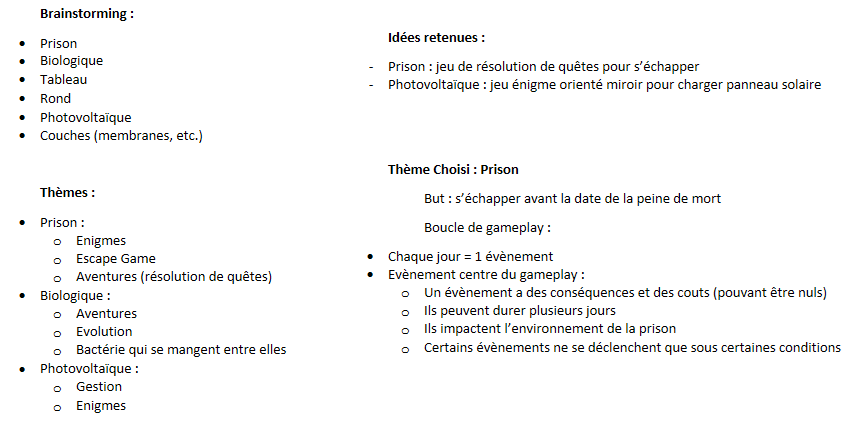

Présentation Générale
Nous avons réalisé un projet, en équipe de trois, dans le cadre d'une GameJam interne à mon école pendant un weekend. Ce fut une expérience très enrichissante, autant sur le plan professionnel que relationnel. En effet, j'ai beaucoup appris autant dans la création de jeux vidéo que dans la gestion du travail d'équipe.
Le thème de cette GameJam était "Cellule". Après une phase de brainstorming où l'on a d'abord listé tous les thèmes qui nous faisaient penser à "Cellule", nous avons jeté sur papier divers croquis et idées de gameplay pour chacun des thèmes.